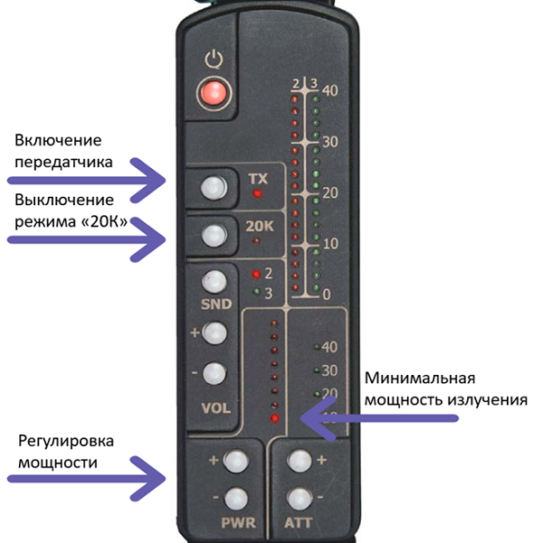

Подготовка к работе
7. Проверить работоспособность изделия:
7.1. нажав кнопку 20К на пульте управления, выключить режим 20К, затем нажав кнопку TX включить передатчик и кнопкой “PWR –“ уменьшить мощность излучения до минимальной;
7.2. расположить имитатор перед антенной на расстояния около 0,4 м, в головных телефонах должен прослушиваться тональный сигнал частоты ~250 Гц, а на индикаторе должен отображаться уровень принимаемого сигнала 2-й гармоники;
7.3. изменяя положение имитатора относительно антенны, получите включение всех светодиодов шкалы «2», затем вводя ослабление сигнала кнопкой “АТТ +” убедитесь, что при каждом нажатии включается следующая ступень аттенюатора (по его шкале) и уменьшаются показания шкалы «2»;
7.4. увеличивая мощность излучения кнопкой “PWR+”, убедитесь, что при каждом нажатии включается следующая ступень шкалы PWR и увеличиваются показания шкалы «2»;
Готово!
